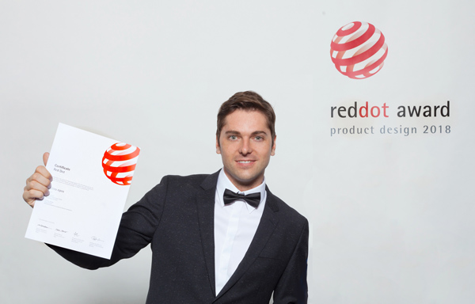

Experience
Led product design for SMG's Real Estate vertical after the merger of Switzerland's two largest real estate portals, reporting to the Managing Director. Hired, mentored and developed a team of 10 designers across three brands and multiple product teams. Designed a multi-brand architecture bringing three brands onto one shared platform and set design quality, consistency and strategic direction.
Owned the property listing journey, the platform's core revenue engine (CHF 164M in 2025). Redesigned the listing funnel into a modular flow, raising completion from 48% to 72%. Used price anchoring on the package selection page to lift the medium package's take rate by over 30% and listing revenue by 26%. Led design for pay-per-ad funnels and launched the first monetisation of property seekers, growing B2C real estate revenue by over 35% and creating the vertical's largest single B2C revenue stream.
Introduced a design system across all three brands, increasing design ticket velocity by 60%. Co-created the Market Atlas with IAZI, providing region-specific pricing insights. Led the ImmoScout24 rebrand and co-led the Design System Guild.
Built the UX team and established a sustainable pipeline to train and retain design talent. Founded and directed the Cocomore UX Academy, a six-month program in product design and user research, and hired four senior designers as faculty. Partnered with Elisava (Barcelona) and the University of Amsterdam to turn mandatory student internships into a recurring talent pipeline.
Trained 24 students on live projects for Nestlé, Samsung and Procter & Gamble, each completing a master's thesis on an Academy project. Converted six graduates (25%) into permanent hires who relocated to Germany. Scaled the UX team to 12 designers at peak and cut design team costs by 60% compared with a fully hired team. Appointed External Professor of User Experience Design at Elisava, Barcelona.
Unified the tolino and Kobo reading ecosystems after Rakuten Kobo took over the tolino platform, reporting to the Head of UX in Toronto. Redesigned the experience across e-readers, mobile apps and web, and led a shared design system adopted by 37 product teams. Enabled Rakuten's entry into the Japanese market with manga reading on its devices.
Designed a haptic page-turn control on the back of the tolino epos for one-handed reading, a first on an e-reader. Developed accessibility options for three groups of visually impaired readers with the German Association for the Blind and Visually Impaired (DBSV), including inverted colours and syllable-by-syllable capitalisation. Won the Red Dot Design Award 2018 for the tolino epos.
Following the launch of the tolino epos and shine, tolino's share of e-reader usage in Germany rose from 22% in 2017 to 40% in 2018, while Amazon Kindle's share fell from 65% to 50%.
Designed the UX for Telekom's IoT heating services and the Magenta Smart Home app, connecting third-party heating hardware to one digital ecosystem. Developed remote, sensor-based heating control compatible across brands with hardware partners such as Junkers. Improved usability through extensive qualitative research and usability testing.
Designed digital products for Germany's leading comparison portal for energy, telecom and financial products. Created the concept and UX for the Vertragsmanager (contract manager) app, designed fast calculators for financial products, and improved the mobile web, blog and newsletter experience.

Download My CV
Get a complete overview of my experience, skills, and qualifications in PDF format.
Education
Certificates
Appearances
Let's Work Together
Interested in working together? Let's discuss how I can help with your next project.
Get in Touch!